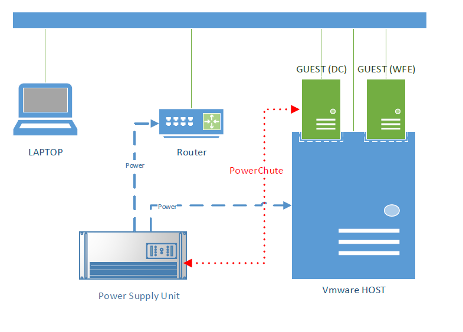
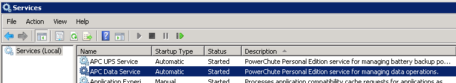
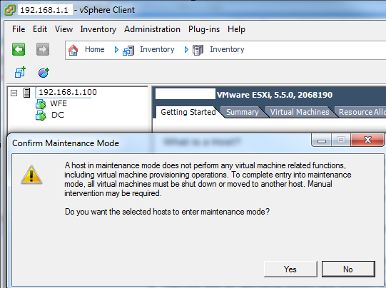
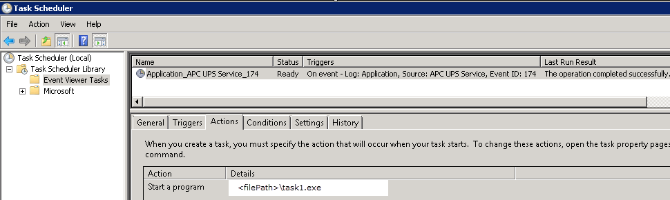
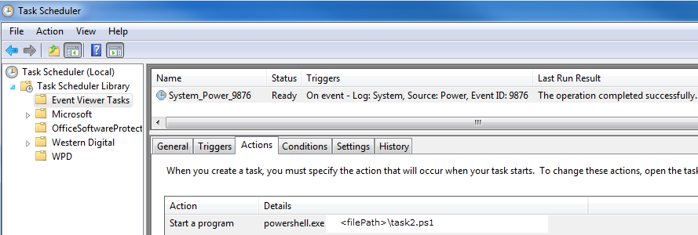

Sunday, March 08, 2015
Problem: Need to have graceful shutdown of home server(s) in the event of a power failure.
Situation: Let me describe the system: Servers are local instances (on-premise).
ESXi 5.5, a.k.a. Hypervisor, ($0) on bare metal, on top of that there are virtual machines (VM). A VM domain controller/database server and a VM web-front-end server. Here is network diagram of the system:

The HOST and GUESTS are always on. The LAPTOP is asleep 90% of the time. The Router and Hypervisor are plugged into a $50
APC Power Supply Unit (PSU). The red line in the diagram describes a USB connection from PSU to the Domain Controller (DC). The PSU came with free software called "PowerChute" which can be used to communicate information about the PSU to machine that PowerChute is installed on (the DC in this case). PowerChute has a service that is always running:

PowerChute: Why not just use PowerChute to do the graceful shutdown process? PowerChute can shutdown the machine that is connected to the PSU by USB. However in this case I need to shutdown other machines as well. And I want to shutdown Hypervisor which does not have an OS that PowerChute can be installed on.
Thought-Process: What I want to have happen is first shutdown the WFE and DC and then shutdown Hypervisor. I can't shutdown Hypervisor until it is put in Maintanence Mode (MM), MM cannot be executed until all VMs are shutdown:

This means I cannot use a command from WFE or DC to put Hypervisor in MM. It has to come from another machine, so in comes the LAPTOP. There is a laptop on the network that sleeps most of the day.
Process Flow (Overview): So let's use the laptop to do the work. PowerChute detects power failure and notifies the DC. The DC tells the LAPTOP to wakeup. LAPTOP wakes up and shuts down the DC and the WFE, then it puts Hypervisor in MM and shuts it down as well.
Flow Chart: Process Flow
Process Flow (Detailed): PowerChute detects power failure and, by default, logs an event into the Application Event Log of the DC:

We have an Event Viewer Task on DC that "listens" for EVENT ID: 174. When found we fire an Executable (task1.EXE) that tries to wake up the LAPTOP and log an event into its System Event Log of EVENT ID: 9876:

There is an Event Viewer Task on the LAPTOP that is "listening" for 9876, when found it executes a Powershell script (task2.ps1). That script is responsible for shutting down DC and WFE and, putting the HOST in MM, and then shutting down Hypervisor.
Task1.EXE: This is a simple .NET console app. The WakeFunction method comes from a
solution on CodeProject. So we use the WakeFunction to send a Magic Packet to wake up LAPTOP. We start pinging LAPTOP to make sure it is awake. Once awake we use WritePowerFailEvent method to write an entry into the event log of LAPTOP.
TASK1.CS
Task2.PS1: This is a simple Powershell script. Shuts down WFE and DC using standard PS commands. Then it uses PUTTY to connect to Hypervisor and puts the HOST into MM and then shuts it down.
TASK2.PS1